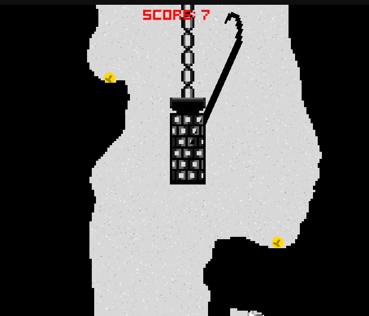

Purpose
This project was made by me in a total of 3 hours of development time. It was made for the TriJam at itch.io (). It was my first time making a project in such a short time and my main focus was on delivering something, that is why I kept the design of the game simple. The player is stuck in a cage and they are lowered to the bottom of the well and lifted back up. Their goal is to collect as much garbage in the well as possible with a hook they are given.
Outcomes
I think the project turned out to be successful. It is a self-contained game that can be finished in a few minutes. The garbage objects I created are varied that alters the player’s approach to picking up each item. Coins are worth more, they are more important. Paper falls slowly, therefore it is more challenging to pick it up when the player is going down. Bottles break, so the player needs to be careful not to drop any bottles.
Shortcomings
This project did have a few shortcomings. Some of them being that there are some objects that are impossible to pick up. The speed for the player rising and lowering is too fast, which might make players rely on luck rather than skill. I feel a lot of the shortcomings come from the short development time due to the jam’s limitations. A lot of them could be fixed easily with a few more iterations in the development cycle.